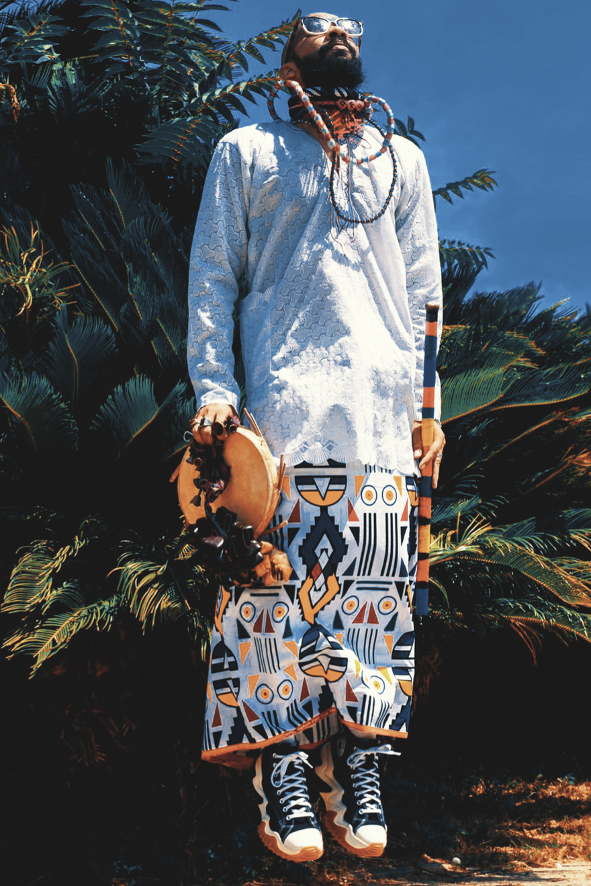

Live Set
Afrosideral
A Cuban artist with a magnetic presence, Afrosideral blends Afro-Cuban folklore, ethnic instruments, and live electronic rhythms to create a mystical, ecstatic journey of self exploration through music and movement. A natural improviser, a mystical and ceremonial aura takes over the space when he performs. As a messenger of his ancestors, his verses carry their strength, inviting introspection and elevating energy on a journey of no return.